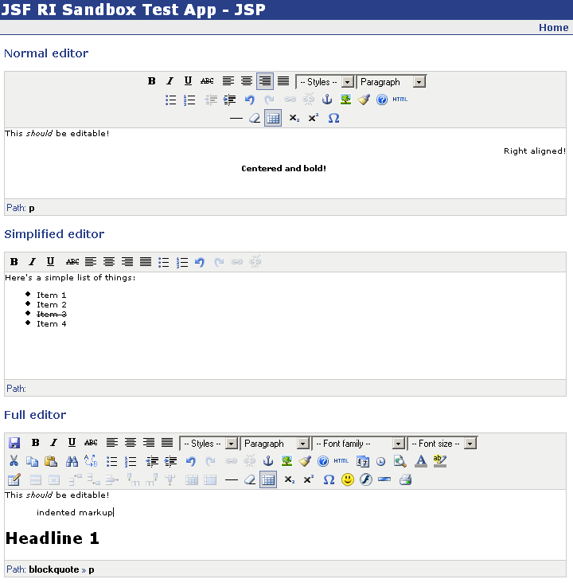

The HTML editor component is a simple wrapper around the
TinyMCE
"platform independent web based Javascript HTML WYSIWYG editor." It's usage is fairly simple. Here are three examples:
<h3>Normal editor</h3> <risb:htmlEditor rows="10" cols="85" value="#{testBean.editorValue}"/> <h3>Simplified editor</h3> <risb:htmlEditor rows="10" cols="85" value="#{testBean.editorValue}" themeStyle="simplified"/> <h3>Full editor</h3> <risb:htmlEditor rows="10" cols="85" value="#{testBean.editorValue}" themeStyle="full"/>
These would render as
